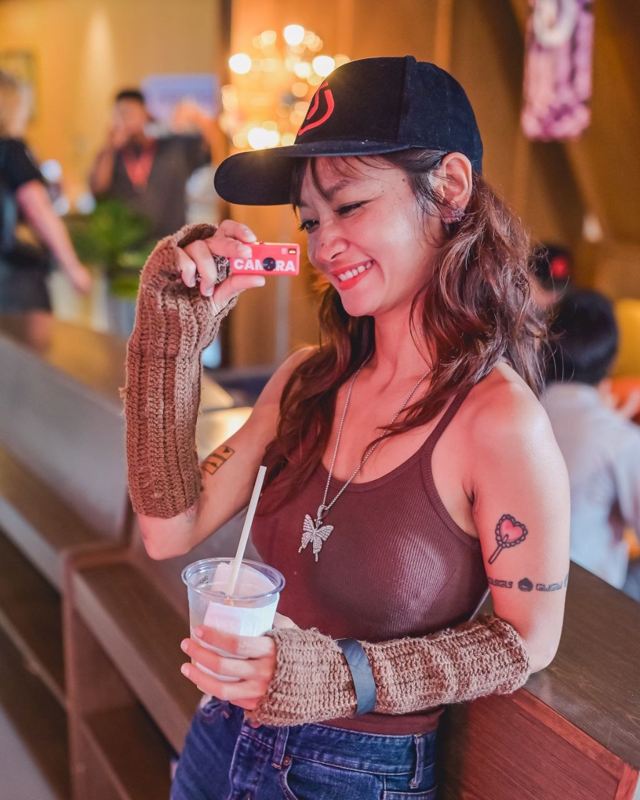

"A custom fashion platform for women who know that real power is soft and riot at the same time."
Why did fashion become fast fashion? Not because people are careless. Because people want to feel different on different days. Different moods. Different moments. Different versions of themselves stepping into different rooms.
That impulse is completely human. And it's not the problem.
The problem is the industry that responded to that impulse with volume instead of intention. 92 million tonnes of textile waste per year. A rubbish truck full of clothing hitting a landfill every single second. Creators underpaid. Customers owning 100 pieces that carry no meaning, no memory, no energy.
"You don't need more clothes. You need fewer pieces that mean more. A wardrobe of intention beats a wardrobe of volume every time."
— Yu Thu, Founder of YOU LOOPThe ratio doesn't add up. Think about how many distinct occasions you actually dress for in a month — birthday dinner, a date, a performance, a celebration. Ten, maybe twelve moments where your outfit actually matters. Now count what's in your wardrobe.
Custom fashion solves this structurally. When a piece is made for one person, for one moment, with one intention — it gets worn again. It carries energy. It reduces the need for more. It trains the impulse toward meaning instead of quantity.
YOU LOOP is a custom crochet fashion platform where nothing exists until you ask for it. Every piece is made to order — never in advance, never in bulk, never for nobody. Creators are paid fairly for their time and craft. Customers receive something unique, meaningful, and intentional. No overproduction. No waste.
One custom piece replaces ten fast fashion purchases. A piece made for your birthday gets worn to every birthday dinner for years. Fewer clothes. More meaning. Less waste. Creators earn fair prices for handmade work. The platform runs on demand — if nobody orders, nothing is made. That is the only model that actually works for the planet.
Not cheap like fast fashion. Not expensive like a designer brand. A middle path — fair for the creator who makes it, accessible for the customer who wears it, and valuable enough to keep. A piece at 2,200 THB that you wear 50 times costs 44 THB per wear. A fast fashion piece at 200 THB worn twice costs 100 THB per wear. Intention is always cheaper in the end.
Every YOU LOOP design carries Soft Riot energy — the balance of feminine and masculine, soft but not passive, expressive but controlled. Rooted in the Buddhist concept of Majjhima Patipada (the Middle Way): balance as the source of real power. The woman who finds YOU LOOP recognises this energy in herself immediately. She doesn't need to be convinced. She already knows.

YOU LOOP started from a dress I wore to my own performance — a crochet mini dress I made in olive green with brown, orange, and teal ruffles. I wore it on stage. I wore it again. And again. Because it carried energy I had put into it intentionally.
That experience showed me something: custom fashion isn't just about looking different. It's about wearing your energy deliberately. About choosing the moment that deserves the piece, and making the piece deserve the moment.
I've spent years in customisation businesses and eCommerce, watching the gap between what people want — something that feels like them — and what the fashion industry offers — volume, speed, sameness. YOU LOOP is my answer to that gap.
I believe in the Buddhist concept of Majjhima Patipada — the Middle Way. Not too soft, not too harsh. Not too feminine, not too masculine. Balance is where real power lives. Soft Riot is that energy, expressed through fashion.
"Only female can save the world with Soft Riot energy."
— Yu ThuSoft Riot is not a collection name. It is an energy. A description of the balanced woman — one who understands that her power comes not from choosing between soft and fierce, but from holding both at once.
Neuroscientist Professor Daphna Joel studied the brain scans of over 1,400 people and found that only 0–8% had entirely male or entirely female brain features. The vast majority of us are a mosaic — a unique mix of both. We already knew this.
Some days you are soft. Nurturing. Open. Receiving. Other days you are fire. Focused. Decisive. Unmoving. Both are real. Both are valid. The problem happens when you get stuck in one for too long.
When women operate from this balanced energy — not performing one extreme or the other, but inhabiting both deliberately — something shifts. Female collectiveness strengthens. Competition quiets. Comparison loses its grip. Because when your look was made only for you, there is nothing to compare to.
Custom fashion is one vehicle for that shift. YOU LOOP is the platform that makes it accessible.
Custom crochet, made to order, delivered in 10–14 days.
Four mood palettes. Your size. Your intention.